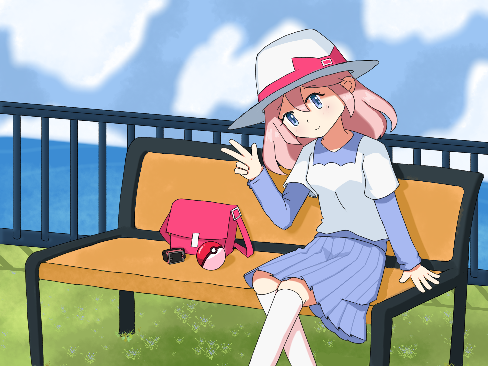

About Me
Hello! You can call me Jake if you want. I really like networking and that's why I chose IT as my major.
I spend most of my time on the internet. It's where I found most of what I care about nowadays, especially my friends!
I care deeply about my friends, whether it is real life or online. Without them, I wouldn't be the person I am today.
Hoping for good life in the next years of my whole life!

My Favorite Hobbies
- Arcade Games
- Listening to Music
- Reading
- Digital Art
- Anime
